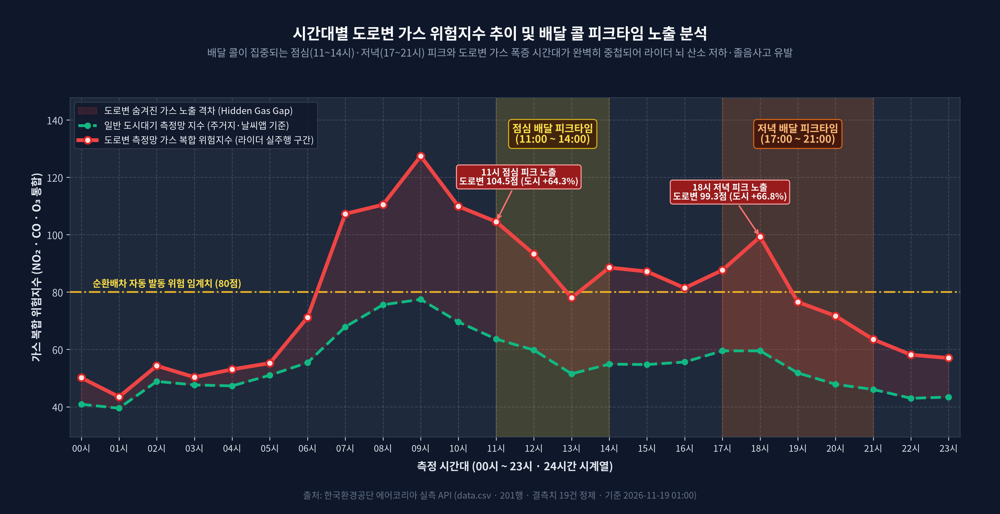

실시간 히든 가스 포켓(Hidden Gas Pocket) 및 순환 배차 지도
도시대기(주거지) vs 도로변대기(대로변) 측정망 격차 및 지자체 이동노동자 쉼터 위치
도시대기 측정소 (날씨앱 보통)
도로변 가스 포켓 (NO₂·CO·O₃ 위험)
지자체 이동노동자 쉼터
대로변 정체·고농도 노출 루트
지연 0분 외곽 청정 순환 배차
도시대기(주거지) vs 도로변대기(대로변) 측정망 격차 및 지자체 이동노동자 쉼터 위치
에어코리아 실측 data.csv를 analysis.R 및 generate_charts.py로 자동 시각화 (우클릭으로 이미지 저장 가능)


data.csv)에어코리아 API 실측 및 결측치('-') 망구분 평균 Imputation 완료 데이터
| 측정일시 (dataTime) | 측정소명 (stationName) | 망구분 (mangName) | PM10 (㎍/㎥) | PM2.5 (㎍/㎥) | O₃ (ppm) | NO₂ (ppm) | CO (ppm) | 가스 위험지수 |
|---|---|---|---|---|---|---|---|---|
| 데이터를 불러오는 중입니다... | ||||||||
배민·쿠팡이츠 등에 실시간 도로변 가스 위험도·순환 콜 매칭 API를 월 구독료로 공급하여 플랫폼의 의무 산재보험료 및 호흡기·졸음사고 보상 리스크를 절감합니다.
순환 배차 및 위험 회피 운행을 준수한 라이더에게 보험료 4.5%를 즉시 할인해 주고, 보험사의 사고 손해율 감소에 따른 제휴 수수료를 수취합니다.
가스 누적 위험 임계치에 도달한 라이더를 지자체 이동노동자 쉼터로 자동 연계하고, 지자체 스마트 노동 안전 관제 시스템 구축 예산으로 납품합니다.